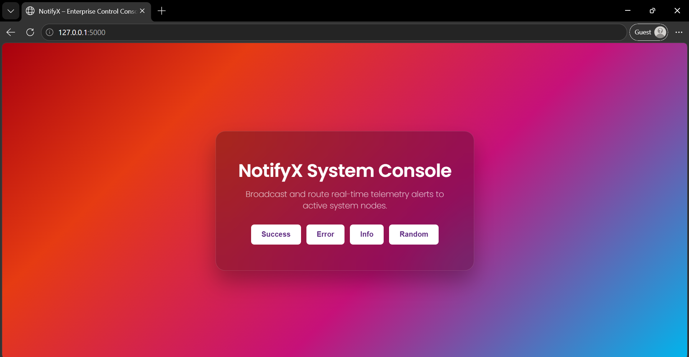
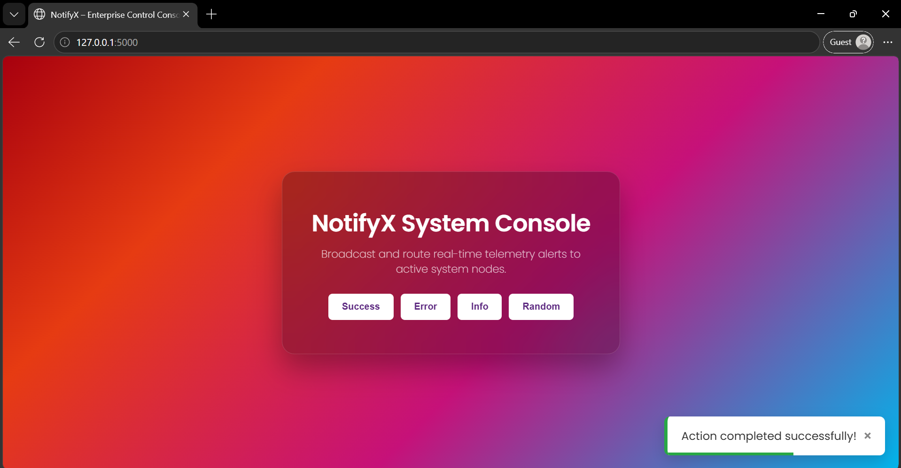
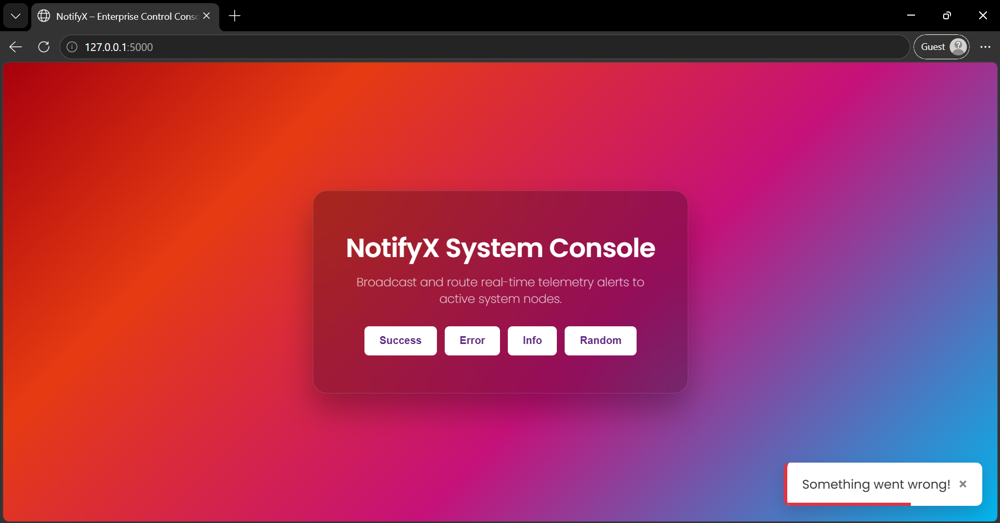
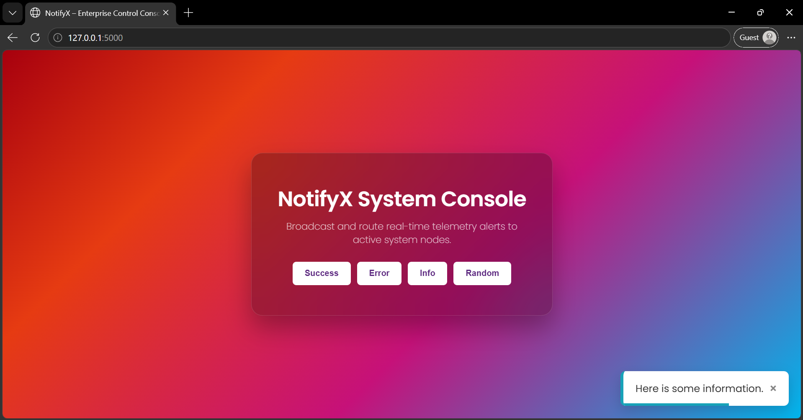
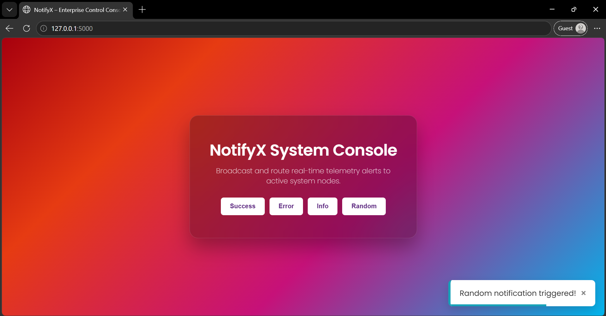
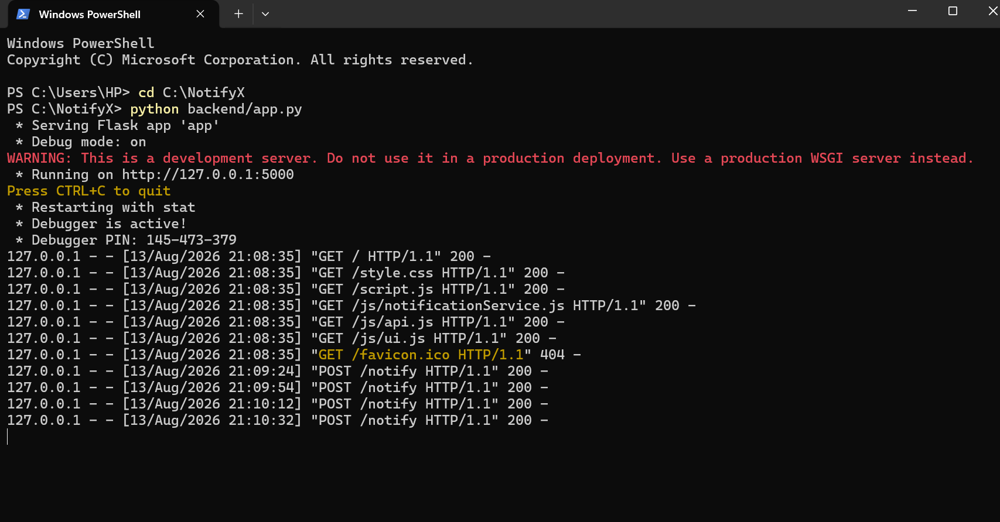

Personal Software Project • Service & Interface
Modular · Real-time · Telemetry
Project Overview: Designed and built NotifyX, a modular notification system console that broadcasts and routes real-time telemetry alerts to active system nodes. Developed as a self-taught, hands-on learning project to explore event-driven communication, frontend-backend routing, and visual state feedback in client-side UIs. The backend Flask API exposes routes to trigger success, error, info, or random status alerts, which are displayed as custom animated toast notifications on the frontend interface while logging request handshakes in the console terminal.
User triggers an event by clicking a notification button on the portal.
Client Javascript dispatches an asynchronous POST request to the Flask server backend.
Flask API receives the payload, logs the alert telemetry, and compiles response objects.
The local Python backend outputs HTTP request handshakes to the powershell window.
Frontend client receives confirmation and mounts an animated toast with countdown progress bar.

Fig. 1a — NotifyX Main Dashboard Interface

Fig. 1b — Success Alert Triggered with Green Toast Banner

Fig. 2a — Error Alert Triggered with Red Toast Banner

Fig. 2b — Info Alert Triggered with Blue Toast Banner

Fig. 3a — Random Alert Option Mounting Dynamic Message

Fig. 3b — Powershell Console logging HTTP request handshakes
Terminal-Based Verification: Since this is a learning experiment, all request payloads and route dispatches are logged directly in the local powershell console terminal. This allows me to verify that asynchronous client requests are successfully received, processed, and responded to by the Python Flask backend.
Uses raw Vanilla JS to dynamically mount and dismiss alert toast blocks. Each alert includes an animated countdown timeline signifying when it will self-destroy.
Client-side triggers communicate through fetch API POST requests to Flask backend endpoints, returning JSON representations of status payloads.
Optimized for local backend study. By executing the server locally, developers can inspect Flask requests in powershell to ensure routing handshakes function correctly.
The following Python snippet shows the Flask routing logic processing notification requests and logging payloads to the console:
# Flask route to trigger notification telemetry @app.route('/notify', methods=['POST']) def post_notification(): data = request.get_json() or {} alert_type = data.get('type', 'info').lower() # Log telemetry event to terminal console print(f"[TELEMETRY] Triggered {alert_type.upper()} notification event.") return jsonify({ 'status': 'success', 'alert': alert_type })
"Building NotifyX was an educational step in my programming path. While my academic core is in Chemistry and reactor simulations, developing this modular console helped me understand how server-side services communicate with frontend clients. Writing asynchronous request handlers and routing events dynamically in Javascript taught me crucial full-stack concepts while using local terminals for live debug logging."
"Building this modular layout helped me appreciate the importance of clean event boundaries and responsive UI states. Running tests through local PowerShell command streams gave me a concrete understanding of how servers handle clients, helping bridge the gap between chemistry modeling computations and web software engineering."